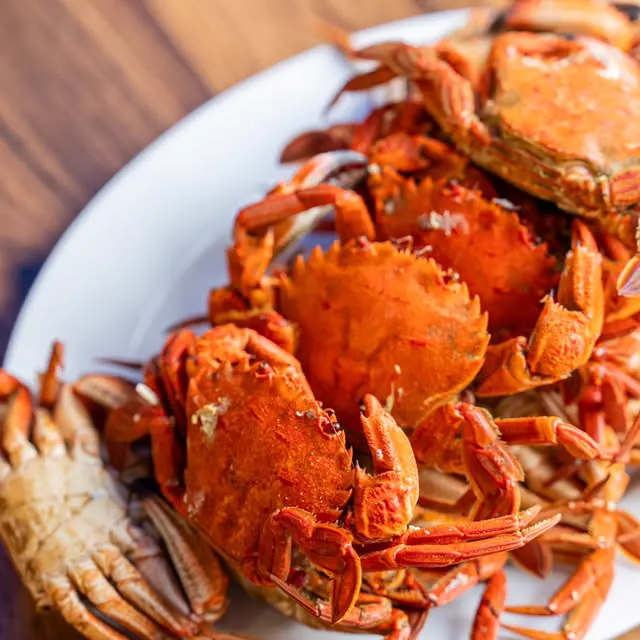
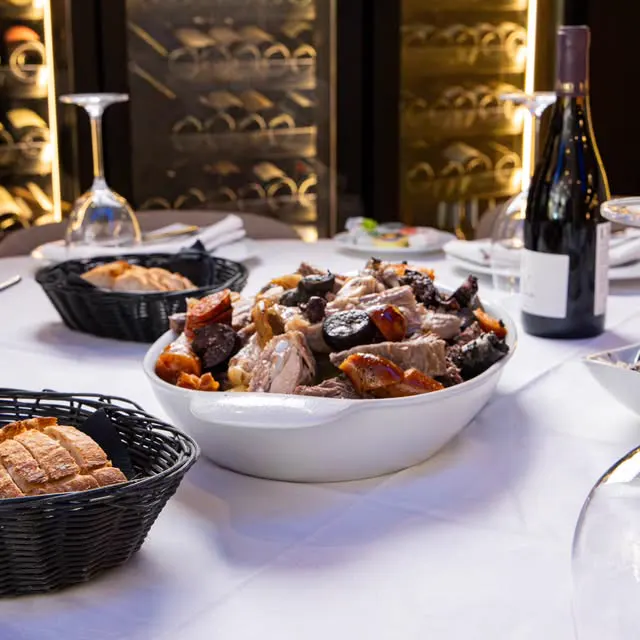

Marisqueira em Odivelas desde 2001
Cervejaria da Ribeirada
Marisco vivo do nosso viveiro, cozinha portuguesa e uma adega à altura.
Reservar MesaO melhor marisco de Odivelas, desde 2001
Há mais de vinte anos que servimos a Ribeirada com marisco fresco, escolhido vivo no nosso viveiro, e a cozinha portuguesa que se come em casa. Uma casa de família, onde se vem celebrar, partilhar e voltar.
Ver a Carta

Do viveiro para a mesa
Lavagante azul, santola, sapateira e carabineiro: escolhe-se vivo, coze-se na hora e serve-se simples, como deve ser. Ao peso, ao preço do dia.
Reservar MesaUma adega à altura do mar
Garrafeira climatizada com vinhos portugueses escolhidos para acompanhar marisco, peixe e os pratos de tacho da casa. Peça a nossa sugestão.
Ver a Adega
A Carta
Do viveiro para a mesa · Desde 2001
Preços indicativos nesta proposta — a confirmar com a casa. Informe-nos de alergias ou intolerâncias.
4,2 ★ · 1747 críticas Google
Reservas
Escolha o dia e a hora. Ao fim de semana a sala enche — reserve com antecedência.
Ou ligue-nos: 21 934 5551
Visite-nos
O mapa é do Google e só carrega se aceitar.